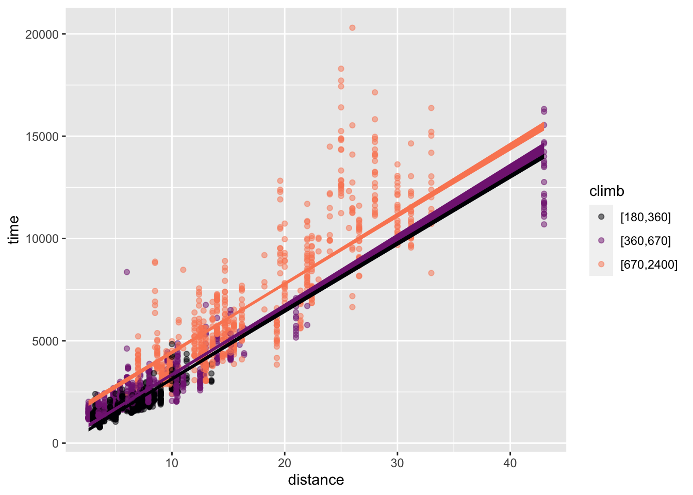
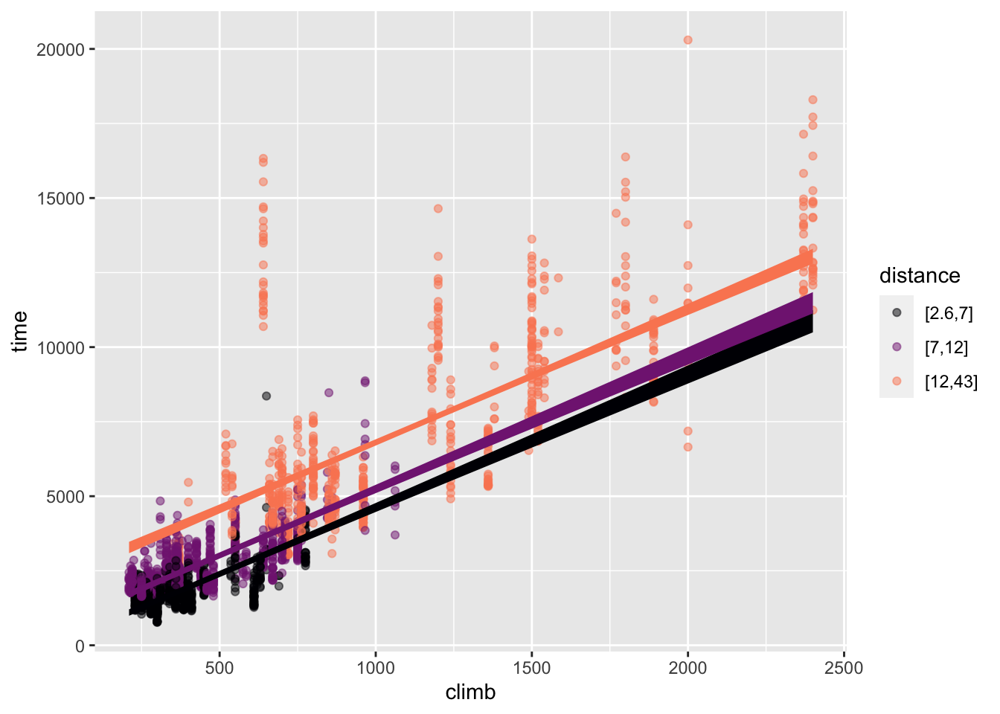
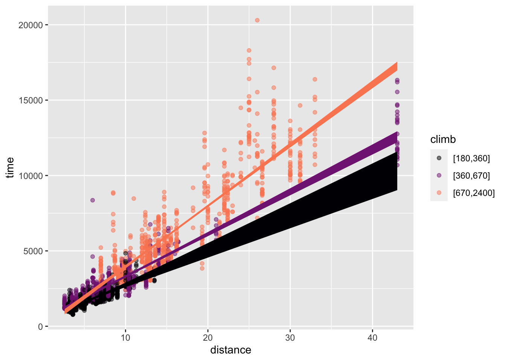
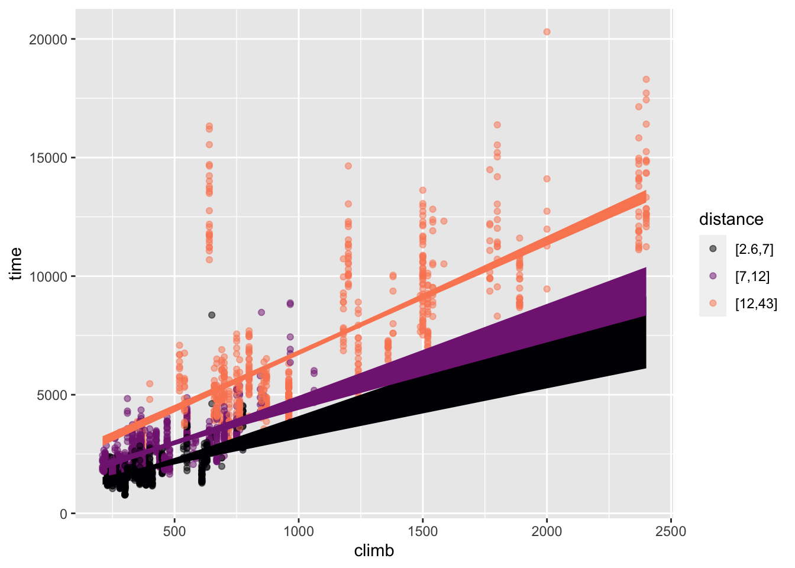

race_mod <- Hill_racing |> model_train(time ~ distance + climb)22 Effect size
Starting with this Lesson, we focus on issues surrounding the selection of explanatory variables. Up to now, we’ve taken a somewhat casual view, pointing out that models with multiple explanatory variables can be made. In discussing prediction models (Lesson 18) we went so far as to say that any set of explanatory (predictor) variables is valid so long as it leads to a good prediction.
This and the next several Lessons deal with statistical modeling methods that support intervening in a system. Such interventions occur on both grand scales and small: changes in government policies such as funding for preschool education or subsidies for renewable energy, closing a road to redirect traffic or opening a new highway or bus line, changing the minimum wage, etc. Before making such interventions, it is wise to know what the consequences are likely to be. Figuring this out is often a matter of understanding how the system works: what causes what. As interventions often affect multiple individuals, influencing the overall trend of the effect across individuals might be the goal instead of predicting how each individual will be affected.
Intervention versus prediction
The statistical thinker distinguishes between settings that call for a predictive model and settings that are fundamentally about the consequences of intervening in a system. In a predictive setting, we’re interested in the outcome from a system that we do not plan to change fundamentally.
The need for predictions arises in both mundane and critical settings. For instance, an airline needs to consider what will be the demand for a particular route so that they can plan how many aircraft and of what type to serve the route. To set the route schedule, the airline needs a prediction about what will be the demand, which may vary based day of the week, time of day, season of the year, and special events (such as massive convention or a solar eclipse). Another example: Merchants and social media sites must choose what products or posts to display to a viewer. Merchants have many products, and social media has many news feeds, tweets, and competing blog entries. The people who manage these websites want to promote the products or postings most likely to cause a viewer to respond. To identify viable products or postings, the site managers construct predictive models based on earlier viewers’ choices.
In an intervention setting, there is a plan to change how the system works. Such changes can take many forms. For instance, an airline needs to set prices and the availability of different seat classes. Demand will depend on price but also on other factors, such as the requirement to make a connection through a third airport and the competition’s prices. A useful model of demand versus price will include such other factors; those factors play a causal role in influencing demand.
Effect size: Input to output
This Lesson focuses on “effect size,” a measure of how changing an explanatory variable will play out in the response variable. Built into the previous sentence is an assumption that the explanatory variable causes the response variable. In this Lesson we focus on the calculation and interpretation of effect size. Lessons 23 through 26 take a detailed look at how to make responsible claims about whether a connection between variables is causal.
An intervention changes something in the world. Some examples are the budget for a program, the dose of a medicine, or the fuel flow into an engine. The thing being changed is the input. In response, something else in the world changes, for instance, the reading ability of students, the patient’s serotonin levels (a neurotransmitter), or the power output from the engine. The thing that changes in response to the change in input is called the “output.”
“Effect size” describes the change in the output with respect to the change in the input. We will focus here on quantitative output variables. (For categorical output variables, the methods concerning “risk” presented in Lesson 21 are appropriate.)
An effect size (with a quantitative output variable) takes two different forms, depending on whether the explanatory variable is quantitative or categorical. We write “the explanatory variable” because effect sizes concern the response to changes in a single explanatory variable, even though there may be others in the model.
Effect size for quantitative explanatory variable
When the explanatory variable is quantitative, the effect size is a rate. Rates are always ratios: the change in output divided by the change in input that caused the output to change. For instance, in the Scottish hill racing setting considered in Lesson 13.3 we modeled running time as a function of race distance and climb. Such a model will involve two effect sizes: the change in running time per unit change in distance; and the change in running time per unit change in climb.
Effect sizes typically have units. These will be the unit of the output variable divided by the unit of the explanatory variable. In the effect size of time with respect to distance, the effect-size unit will be seconds-per-kilometer. On the other hand, the effect size of time with respect to climb will have units seconds-per-meter.
Here is one way to calculate an effect size: change a single input by a known amount, measure the corresponding change in output, and take the ratio. For example:
To calculate the effect size on time with respect to distance, we evaluate the model for two different distances, keeping climb at the same level for both distances.
race_mod |> model_eval(distance = c(5, 10), climb = 500)| distance | climb | .lwr | .output | .upr |
|---|---|---|---|---|
| 5 | 500 | 395.0907 | 2103.944 | 3812.796 |
| 10 | 500 | 1664.4096 | 3372.985 | 5081.560 |
The output changed from 2104 seconds to 3373 seconds in response to changing the value of distance from 5 moving to 10 km. The effect size is is therefore
\[\frac{3373 - 2104}{10 - 5} = \frac{1269}{5} = 253.8\ \text{s/km}\]
To calculate the effect size on time with respect to climb, a similar calculation is done, but holding distance constant and using two different levels of climb:
race_mod |> model_eval(distance = 10, climb = c(500,600))| distance | climb | .lwr | .output | .upr |
|---|---|---|---|---|
| 10 | 500 | 1664.410 | 3372.985 | 5081.560 |
| 10 | 600 | 1925.414 | 3633.961 | 5342.507 |
The effect size is:
\[\frac{3634 - 3373}{100} = \frac{261}{100} = 2.6\ \text{s/m}\]
To see how effect sizes might be used in practice, put yourself in the position of a member of a committee establishing a new race. The new race will have a distance of 17 km and a climb of 600 m. The anticipated winning time in the new race will be a matter of prediction:
race_mod |> model_eval(distance = 17, climb = 600)| distance | climb | .lwr | .output | .upr |
|---|---|---|---|---|
| 17 | 600 | 3701.378 | 5410.619 | 7119.86 |
Note how broad the prediction interval is: from about one hour up to two hours.
Debate ensues. One faction on the committee wants to shorten the race to 15 km and 500 m climb. How much will this lower the winning time?
On its own, the -2 km change in the race distance will lead to an approximately will lead to a winning time shorter by \[-2\ \text{km} \times 253.8\ \text{s/km} = -508\ \text{s}\] where \(253.8\ \text{s}{km}\) is the effect size we calculated earlier.
The previous calculation did not consider the proposed reduction in climb from 600 m to 500 m. On its own, the -100 m change in race climb will also shorten the winning time:
\[ -100\ \text{m} \times 2.6\ \text{s/km} = -260\ \text{s}\]
Each of these two calculations of change in output looks at only a single explanatory variable, not both simultaneously. To calculate the overall change in race time when both distance and climb are changed, add the two changes associated with the variables separately. Thus, the overall change of the winning time will be \[(-508\ \text{s}) + (-260\ \text{s}) = -768\ \text{s} .\]
Comparing predictions?
The predicted winning race time for inputs of 17 km distance and 600 m climb was [3700 to 7100] seconds. What if we make a second prediction with the proposed changes in distance and time, and subtract the two predictions?
race_mod |> model_eval(distance = 15, climb = 500)| distance | climb | .lwr | .output | .upr |
|---|---|---|---|---|
| 15 | 500 | 2932.923 | 4642.026 | 6351.13 |
The shorter race has a predicted winning time of [2900 to 6400] seconds.
Question: How do you subtract one interval from another? Should we we look at the worst-case difference: [(6400 - 3700) to (2900 - 7100)], that is, [-4200 to 2700] seconds? Or perhaps we should construct the difference as the change between the lower ends of the two prediction intervals up to the change in the upper ends? That will be [(2900 - 3700) to (6400 - 7100)], that is, [-800 to -700] s.
A good perspective on this question of the difference between intervals is based on the distinction between the part of the time that is explained by distance and climb, and the part of time that remains unexplained, perhaps due to weather conditions or the rockiness of the course. If the committee decides to change the course distance and time it will not have any effect on the weather or course rockiness; these factors will remain random noise. The lower end of each prediction interval reflects one extreme weather/rockiness condition; the upper end reflect another extreme of weather/rockiness. Apples and oranges. The change in race time due to distance and time should properly be calculated at the same weather/rockiness conditions. Thus, the [-800 to -700] s estimate of the change in running time is more appropriate. The effect-size calculation does the apples-to-apples comparison.
Effect size for categorical explanatory variable
When an explanatory variable is categorical, the change in input must always be from one level to another. For example, an airline demand model might involve a day-of-week variable with levels “weekday” and “weekend.” To calculate the effect size on demand with respect to day-of-week, all you can do is measure the corresponding change in the model output when day-of-week is changed from “weekday” to “weekend.” The effect size will simply be this change in output, not a rate. Calculating a rate would mean quantifying the change in input, but weekday-to-weekend is not a number.
Model coefficients and effect size
For simplicity in these Lessons, we emphasize models where the explanatory variables contribute additively, as implicit in the use of + in model specifications like time ~ distance + climb. More generally, both additive and multiplicative contributions can be used in models. (Similarly, it’s possible to use curvey transformations of variables.) In Section 22.3 we will investigate the uses of multiplicative contributions.
In models incorporating multiplicative or curvey contributions, effect size can be calculated using the model_eval()-based method described in Section 22.1.1. But, for models where explanatory variables contribute additively, there is an easy shortcut for calculating effect size: the coefficient on each explanatory variable is the effect size for that variable.
To illustrate, look at the coefficients on the time ~ distance + climb model:
race_mod |> conf_interval()| term | .lwr | .coef | .upr |
|---|---|---|---|
| (Intercept) | -533.432471 | -469.976937 | -406.521402 |
| distance | 246.387096 | 253.808295 | 261.229494 |
| climb | 2.493307 | 2.609758 | 2.726209 |
The .coeficients on distance and on climb are the same as we calculated using the model_eval() method!
Moreover, for additive models, the confidence interval on the coefficient also expresses the confidence interval on the corresponding effect size. So, when in Section 22.1.1 we said the effect size of distance on time was 253.8 s/km, a better statement would have been as an interval: [246 to 261] s/km.
Interactions
The model time ~ distance + climb combines the explanatory variables additively. Figure 22.1 shows the “shape” of the model graphically in two different ways: with distance mapped to x and climb mapped to color (left panel) and with climb mapped to x and distance to color (right panel). The same model function is shown in both; just the presentation is different. In both panels, the model function appears as a set of parallel sloped lines. This is the hallmark of an additive model. (See Figure 4.7 for another example.)
Hill_racing |> filter(climb > 100) |>
point_plot(time ~ distance + climb, annot = "model",
model_ink = 1)
Hill_racing |> filter(climb > 200) |>
point_plot(time ~ climb + distance, annot = "model",
model_ink = 1)

distance mapped to x

climb mapped to x
time ~ distance + climb. The lines for different colors are parallel.
The effect size of the variable being mapped to x appears as the slope of the lines. The effect size of the variable mapped to color appears as the vertical separation between lines. Figure 22.1 shows that the effect of distance and the effect of climb do not change when the other variable changes; the lines are parallel.
In contrast, Figure 22.2 gives views of the multiplicative model time ~ distance * climb. In Figure 22.2, the spacing between the different colored lines is not constant; the lines fan out rather than being parallel.
Hill_racing |> filter(climb > 100) |>
point_plot(time ~ distance * climb, annot = "model",
model_ink = 1)
Hill_racing |> filter(climb > 200) |>
point_plot(time ~ climb * distance, annot = "model",
model_ink = 1)

distance mapped to x

climb mapped to x
time ~ distance * climb. The lines fan out.
Again, the effect size of the variable mapped to color appears as the vertical spacing between the different colored lines. Now, however, that vertical spacing changes as a function of the variable mapped to x. That is, the effect size of one explanatory variable depends on the other.
The model coefficients show the contrast between additive and multiplicative models. For the additive model, there is one coefficient for each explanatory variable. That variable’s coefficient captures the effect size of the variable.
Hill_racing |> model_train(time ~ distance + climb) |> conf_interval()| term | .lwr | .coef | .upr |
|---|---|---|---|
| (Intercept) | -533.432471 | -469.976937 | -406.521402 |
| distance | 246.387096 | 253.808295 | 261.229494 |
| climb | 2.493307 | 2.609758 | 2.726209 |
For the multiplicative model, there is a third coefficient. The model summary reports this as distance:climb. Generically, it is called the “interaction coefficient.” The interaction coefficient quantifies how the effect of each explanatory variable depends on the other.
Hill_racing |> model_train(time ~ distance * climb) |> conf_interval()| term | .lwr | .coef | .upr |
|---|---|---|---|
| (Intercept) | -165.7390492 | -59.1793672 | 47.3803148 |
| distance | 214.5459927 | 224.1393681 | 233.7327434 |
| climb | 1.5759813 | 1.7840023 | 1.9920232 |
| distance:climb | 0.0349428 | 0.0442599 | 0.0535769 |
You can’t read the effect size for an explanatory variable from a single coefficient. Instead, arithmetic is required. For instance, the effect size of distance is not just the quantity reported as the .coef on distance. 224 s/m. Instead, the effect size of distance is a function of climb:
\[\text{Effect size of }\mathtt{distance}: 224 + 0.044 \times \mathtt{climb}\]
\[\text{Effect size of }\mathtt{climb}: 1.78 + 0.044 \times \mathtt{distance}\] Each of the above formulas is for an effect size: how the model output changes when the corresponding explanatory variable changes. In contrast, the model function gives time as a function of distance and climb. The model function is:
\[\text{Model function: }\texttt{time(distance, climb)} = \\-59.2 + 224 \times \texttt{distance} + 1.78 \times \texttt{climb} + 0.044 \times \texttt{distance} \times \texttt{climb}\]
For the reader who has already studied calculus:
The effect sizes are the partial derivatives of the model function. The interaction coefficient is the “mixed partial derivative” of the function with respect to both distance and climb.
\[\text{Effect size of }\mathtt{distance}: \frac{\partial\ \texttt{time}}{\partial\ \texttt{distance}}\]
\[\text{Effect size of }\mathtt{climb}: \frac{\partial\ \texttt{time}}{\partial\ \texttt{climb}}\]